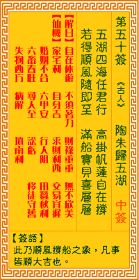

观音灵签第五十签 【陶朱归五湖】 |
 | |||
五湖四海尽行船 高挂风帆把舵坚 幸得顺风随所至 满船宝贝称心田 |
||||
| 【吉凶】 | 大吉签 | 【宫位】 | 亥宫 | |
| 【签语】 | 此卦顺风撑船之象，凡事皆顺大吉也。 | |||
| 【解曰】 | 自在悠游 不须着力 财禄重重 无不欣美 | |||
| 【仙机】 | 此签家宅利，自身吉，求财利西，交易宜迟，婚姻不合，六甲安，行人阻，田蚕秋利，六畜春旺，寻人至，讼亏，移徙守旧，失物西方， 病解，山坟南吉。 | |||
| 【详解】 | 五湖四海都可以驾船遨游，扬起风帆稳住船舵;所到之处皆能得到顺风相送，船上满满的收获令人欢心喜悦。 自在优游，不须着力，财源重重，无不惟悦。此签顺风行船之象，凡事和合大吉。 本签曰。五湖四海尽行船。高挂风帆把舵坚。如三宝太监。郑和之行之于南洋也。只要把舵牢住。必可扬德威于异域者。为顺风行船之象。凡事和合大吉者。虽大吉之签。百事兴。唯必留心正应。反应之不同。易言之。本签者自在优游。不须着力。财源重重。无不惟悦者。 此签有”友善关怀”之意。提醒当事人，互助互动。即使本身事情再多、再忙，也不能忽略了与周遭旁人跟亲朋好友间的联系交流。透过本身发自于内心的真挚恳切，旁人必能感受到善意与温暖。这种内心的真实感受，胜过外在的一切有形物质。凡事由本身做起，藉由诚恳的表达与关心，自己与他人之间，在无形中也递增了互信互助的情谊，因此而更加团结、更加和谐。 | |||
| 【典故】 | 陶朱公原名范蠡，春秋时代人，初和越王勾践做事，后来发现勾践是个只能共患难不能共享安乐的人，就毅然离开了他，坐船飘行到五湖 去了。到了齐国叫陶的 | |||